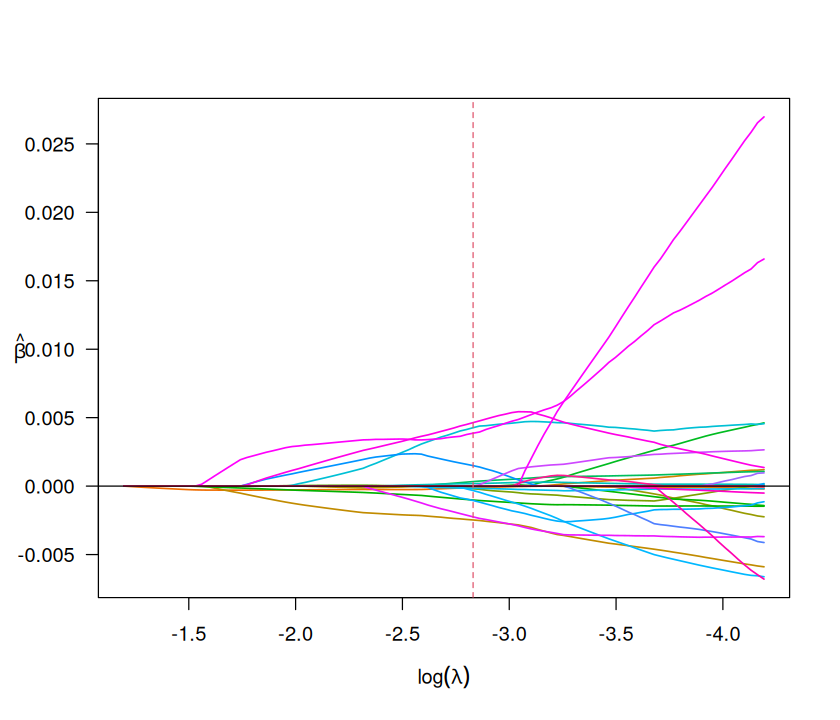
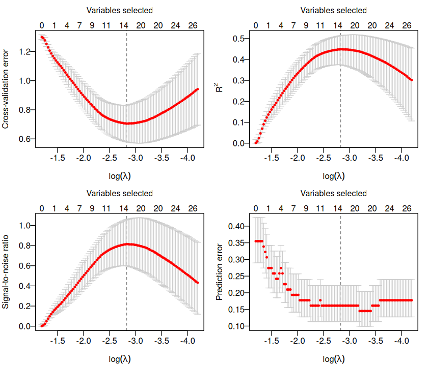

This vignette shows how biglasso compares to
glmnet, ncvreg, and picasso on
simulated and real data sets, covering linear regression, logistic
regression, memory efficiency, and out-of-core (“bigger than RAM”)
fitting. All numbers and figures below are generated by a separate
reproducibility archive, biglasso-bench,
and copied in here by its
workflow/scripts/publish/copy_to_pkgdown.sh - see that repo
if you want to re-run any of this yourself. The R chunks in each section
below are shown for reference (eval = FALSE) rather than
actually re-run as part of building this vignette, since they call out
to a Snakemake pipeline in a different repo.
Source:
pbreheny/biglasso-bench@5566aab (with uncommitted changes)
Generated: 2026-08-17T22:01:26Z
Screening rules
biglasso‘s adaptive screening rules discard features
that provably cannot enter the model at the current lambda,
avoiding wasted work scanning the full (possibly huge) design matrix.
The figure below shows what fraction of features each rule discards
across the solution path, on the bcTCGA breast-cancer gene expression
data (the plot’s legend uses the rules’ old pre-1.5 names,
SSR/SEDPP/BEDPP - current
biglasso calls these SSR,
Adaptive, and Hybrid respectively).

Linear regression
Simulated data
Solving the lasso path (100 lambda values, log-spaced
from lambda_max down to 0.1 * lambda_max) over
20 replications, varying the number of observations n
(p fixed at 10,000) and the number of features
p (n fixed at 1,000). Data are generated as
y = X %*% beta + 0.1 * eps, X and
eps iid N(0, 1).


- Varying
n: At the largest simulated size,biglasso(1 core) is not the fastest package here - it trailspicassoby a factor of 1.0; with multiple cores (biglasso (8 cores)),biglassois the fastest option overall, 3.2x faster than the fastest single-threaded package (picasso). - Varying
p: At the largest simulated size,biglasso(1 core) is not the fastest package here - it trailsglmnetby a factor of 1.1; with multiple cores (biglasso (8 cores)),biglassois the fastest option overall, 3.1x faster than the fastest single-threaded package (glmnet).
Real data
The same path-fitting benchmark, run on three real data sets: breast-cancer gene expression data (bcTCGA), MNIST handwritten digit images, and a resampled subset of the NYT bag-of-words corpus (see biglasso-bench’s README for exact provenance of each).
| Method | gene | mnist | nyt |
|---|---|---|---|
| glmnet | 0.53 (0.002) | 2.81 (0.016) | 15.08 (0.075) |
| ncvreg | 1.14 (0.010) | 5.67 (0.020) | 31.19 (0.016) |
| picasso | 0.62 (0.008) | 3.11 (0.026) | 18.37 (0.030) |
| biglasso | 0.67 (0.005) | 1.73 (0.080) | 17.35 (2.353) |
biglasso has the fastest mean time on 1 of the 3 real
linear-regression data sets tested here; on the others it is not the
fastest by raw computing time - glmnet (2) was.
glmnet in particular has gotten faster since the original
biglasso paper was published, and on real data at these sizes it’s often
competitive with or faster than biglasso.
biglasso’s advantage on real data is primarily memory (see
below), not always raw speed.
Logistic regression
Simulated data
Same design as the linear-regression sweep above, but fitting
family = "binomial" models.
# from biglasso-bench/:
snakemake all --config scale=full # includes logistic_vary_n, logistic_vary_p

- Varying
n: At the largest simulated size,biglasso(1 core) is not the fastest package here - it trailsglmnetby a factor of 1.5; with multiple cores (biglasso (8 cores)),biglassois the fastest option overall, 2.2x faster than the fastest single-threaded package (glmnet). - Varying
p: At the largest simulated size,biglasso(1 core) is not the fastest package here - it trailsglmnetby a factor of 1.6; with multiple cores (biglasso (8 cores)),biglassois the fastest option overall, 1.9x faster than the fastest single-threaded package (glmnet).
Real data
RCV1 (in the default all target) plus Gisette, NEWS20,
and P53 (opt-in via logistic_real_extra, kept opt-in purely
for download size - 22-191MB each).
| Method | rcv1 | gisette | news20 | p53 |
|---|---|---|---|---|
| picasso | 12.26 (0.054) | 1.80 (0.005) | 14.41 (0.212) | 6.98 (0.037) |
| ncvreg | 16.17 (0.052) | 4.18 (0.022) | 28.81 (0.342) | 18.46 (0.020) |
| glmnet | 8.34 (0.021) | 1.44 (0.008) | 12.63 (0.028) | 5.27 (0.013) |
| biglasso | 10.34 (0.034) | 1.94 (0.011) | 20.02 (0.094) | 9.94 (0.011) |
biglasso does not have the fastest mean time on any of
the 4 real logistic-regression data sets tested here -
glmnet (4) did. glmnet in particular has
gotten faster since the original biglasso paper was published, and on
real data at these sizes it’s often competitive with or faster than
biglasso. biglasso’s advantage on real data is
primarily memory (see below), not always raw speed.
Memory efficiency
biglasso never copies X into ordinary R
memory - it operates on a file-backed big.matrix
throughout. To quantify the effect, we simulate a 1,000 x 100,000 design
matrix (raw size 0.75 GB) and measure peak resident set size (RSS) via
/usr/bin/time -v for a single fit and for 10-fold
cross-validation (picasso has no cv.*
function, hence no CV bar for it below).

| Package | Single fit (GB) | 10-fold CV (GB) |
|---|---|---|
| biglasso | 0.26 | 0.26 |
| glmnet | 2.84 | 3.74 |
| ncvreg | 2.81 | 4.93 |
| picasso | 2.21 | NA |
Out-of-core computation
To demonstrate fitting data larger than available RAM, we simulate an
n = 3000, p = 1,340,000 design matrix (tens of GB on disk) and fit both
linear and logistic lasso models using biglasso’s
"Hybrid" screening rule, entirely off a memory-mapped
file.


Colon cancer worked example
The biglasso intro vignette’s small-data colon-cancer
demo (data(colon)), fit and cross-validated end to end as a
sanity check that the whole pipeline - not just the large-scale
benchmarks above - reproduces the package’s documented behavior.


Reproducing these results
All of the above comes from biglasso-bench, a Snakemake-driven pipeline that is entirely separate from this package:
git clone https://github.com/pbreheny/biglasso-bench
cd biglasso-bench
snakemake all memory bigdata logistic_real_extra --config scale=full --cores 1
snakemake publish --config scale=full
BIGLASSO_REPO=/path/to/biglasso workflow/scripts/publish/copy_to_pkgdown.shThe last two commands regenerate the figures/tables under
vignettes/figures/ and
vignettes/benchmarks_data/ in this repo from
whatever the latest biglasso-bench run produced, and are
safe to re-run any time you want this vignette’s numbers refreshed
(e.g. after a biglasso performance change) - review the
resulting git diff here before committing.